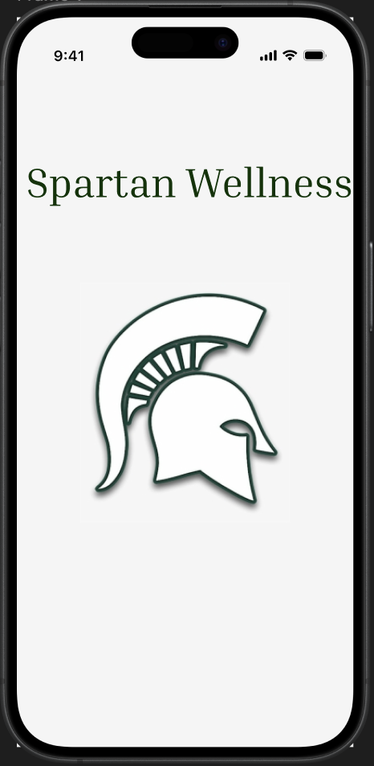
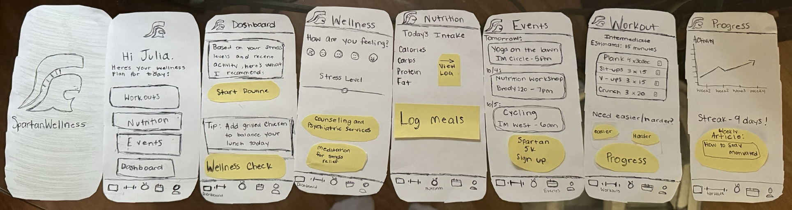

Case Study
Designing a structured mobile experience to help students balance focus, productivity, and health.

The Spartan Wellness App is a mobile concept created to support students who are trying to stay healthy without becoming overwhelmed. The project explores how a simple interface and clear visual cues can make productivity tools feel more supportive, available, and sustainable.
College students often juggle classes, assignments, work, and social commitments all at once. While many productivity apps are meant to help, they can feel cluttered, overly rigid, or stressful to maintain. I wanted to explore a more minimal experience where students could have all of their mental and physical well-being resources in one place.
I began by thinking through how students currently interact with focus and productivity tools, and where those tools tend to fall short. Many experiences prioritize features over usability, which can make them feel overwhelming instead of helpful. I wanted to ensure a clear design while prioritizing the needs of students. While being a student in this situation, it was easy to put myself in the shoes of a user that would engage with this app and also gain perspective from those around me.
Early sketches focused on screen flows and clear navigability. The main goal was to reduce friction and keep the experience as intuitive as possible.

I translated the concept into a higher-fidelity prototype with a video and Figma mock-up, using a clean visual hierarchy and gentle visual feedback to support the app’s wellness-centered purpose.
The final concept presents a calm, visually clear interface that guides users through various wellness practices and available resources. By reducing interface clutter and emphasizing clarity, the design aims to support a more balanced and less overwhelming approach to students' health.
This project reminded me that effective UX does not always come from adding more. In this case, the most important design decisions were the smallest ones: how information was organized, how state changes were shown, and how the interface could feel supportive instead of demanding. If I continued developing this project, I would want to test it with students and refine the interaction flow based on real feedback.